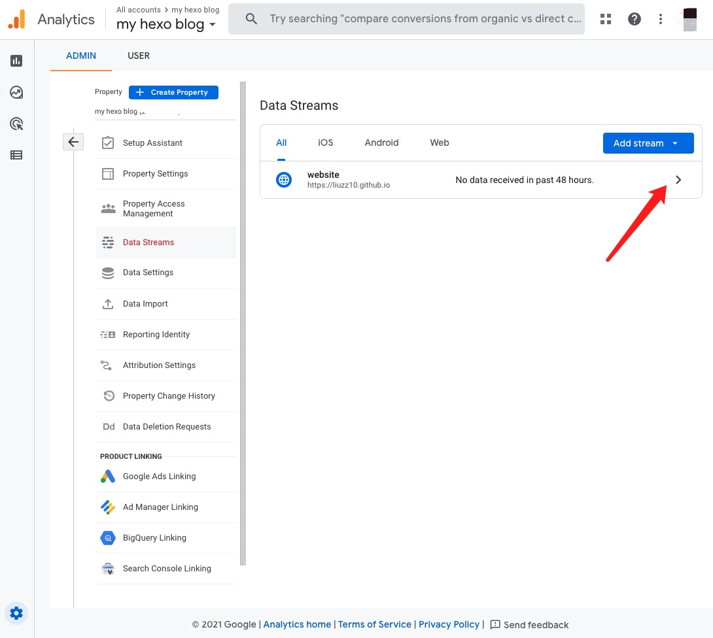
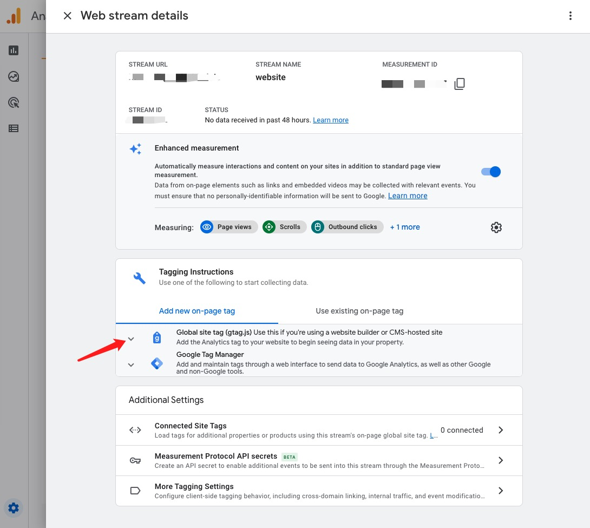
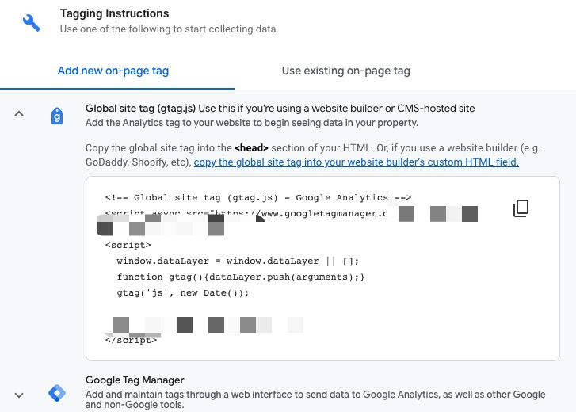

Since Google Analytics(GA) changed the layout, some tutorials are too old to follow. So I’m writing a new one.
Prerequisites
You should have installed Hexo and had the site deployed already (so you should have an site url).
How to use Hexo and deploy to GitHub Pages? Follow this instruction.
Instructions
Firstly, let GA know the site url.
Create an GA account. Google the instruction and it’s pretty easy to follow. Make sure that you entered the site url so that Google Analytics knows what site to track.
Go to Admin (bottom left corner) > Data Streams. You should see the site url that you entered. Click on it.

- Go to Tagging Instructions > Add new on-page tag > Global site tag (gtag.js).

- Copy all the code provided.

Secondly, let the site knows which GA is used for tracking.
Go to your Hexo code. Under your template’s folder, find
layout.ejs.Paste the site tag code in
<head></head>and make sure it’s on the top of other code in<head></head>.
1 |
|
Then you can do hexo clean, hexo deploy to deploy it. It’s just this simple! Make sure that you verify it by checking the report dashboard on GA.
Reference
https://jiwonyeom.github.io/2017/10/09/google-analytics-on-hexo/
https://www.codeblocq.com/2015/12/Add-Google-Analytics-to-your-hexo-blog/